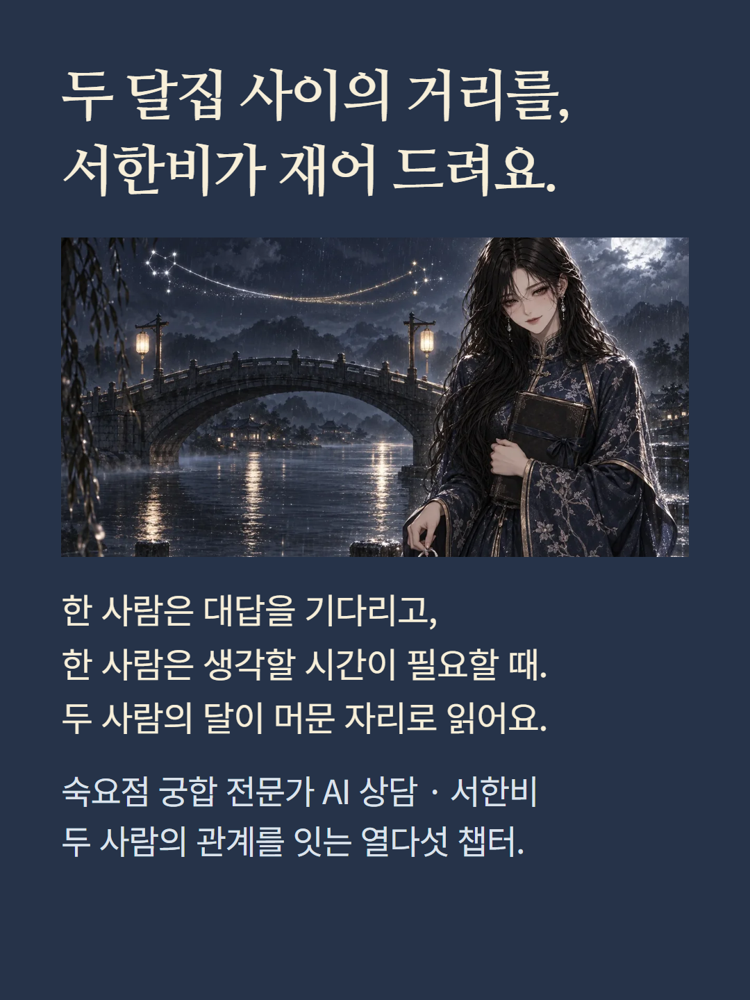
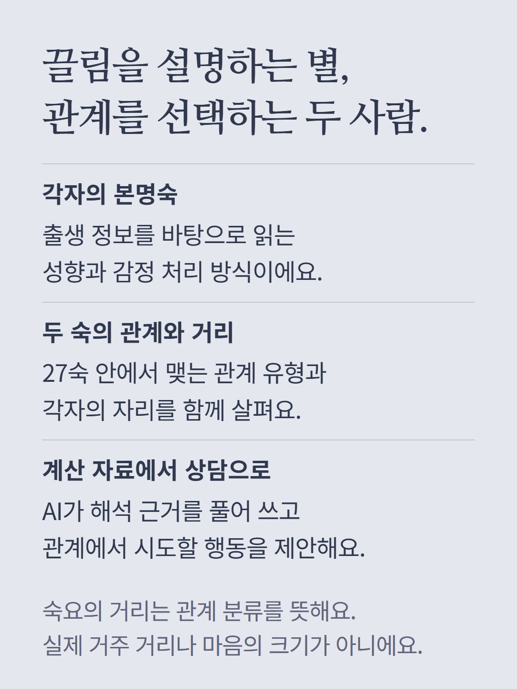
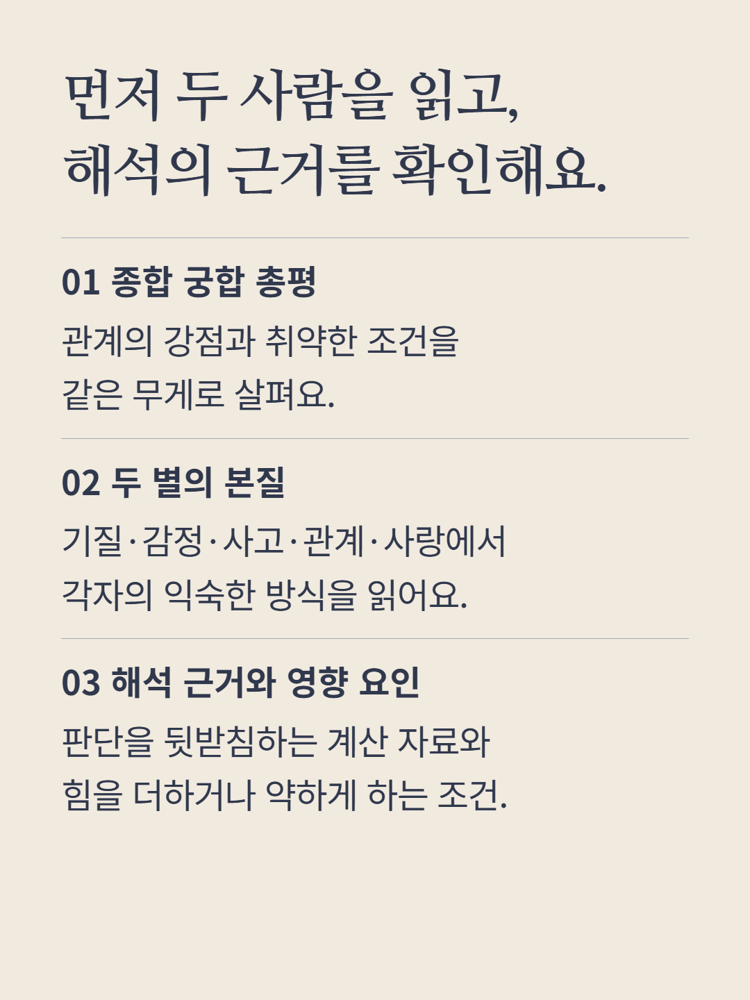
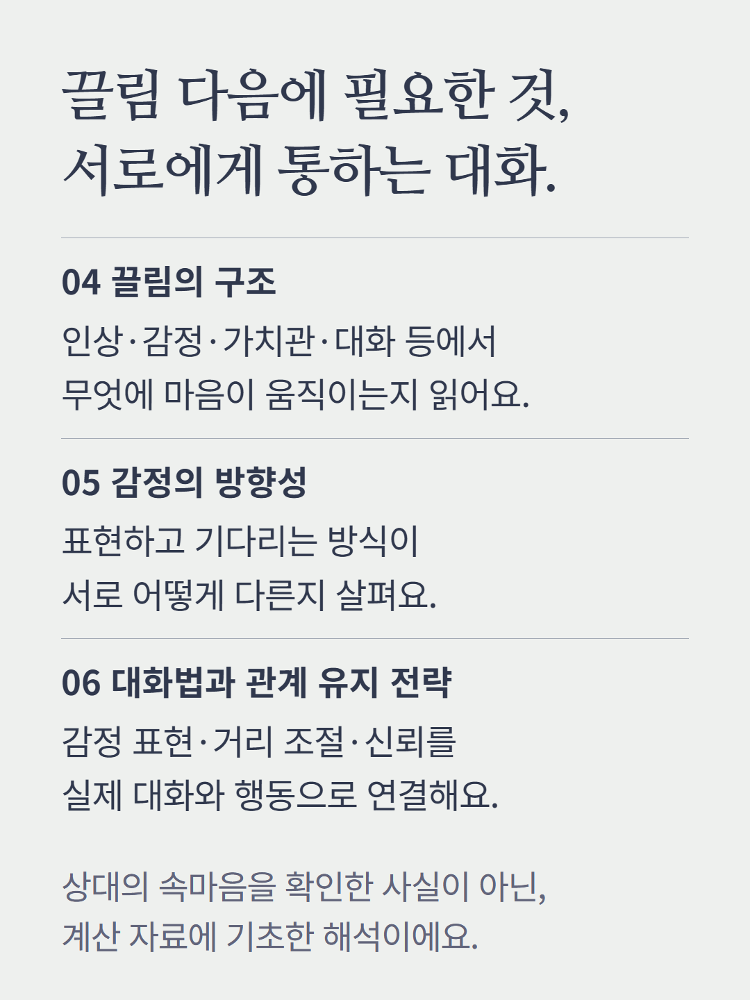
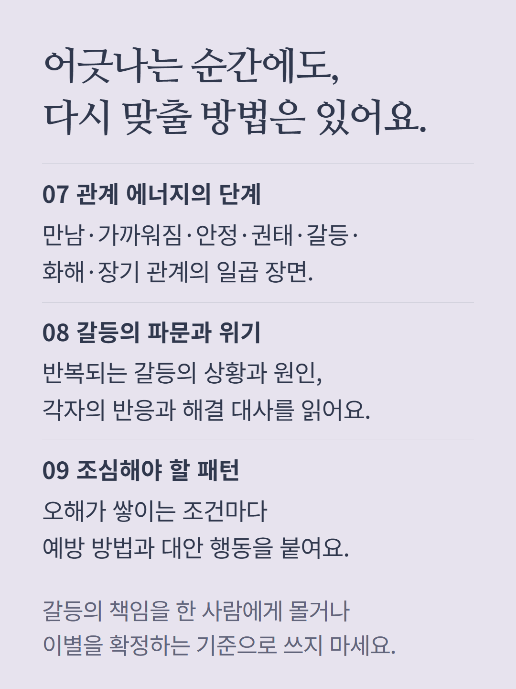
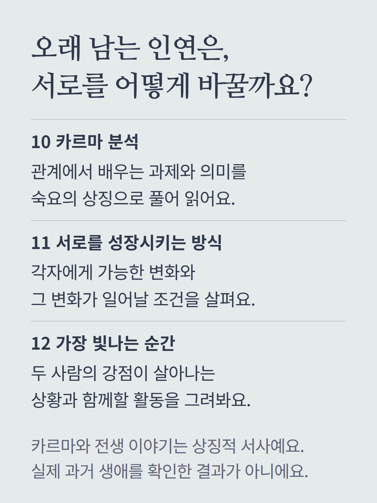
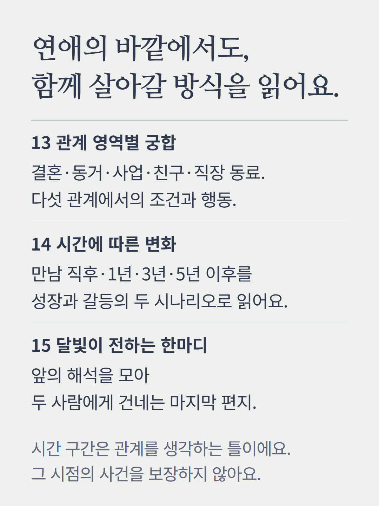
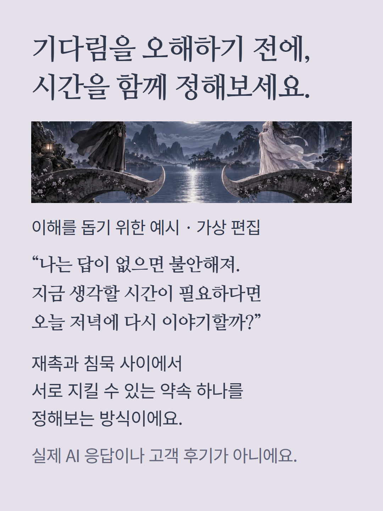
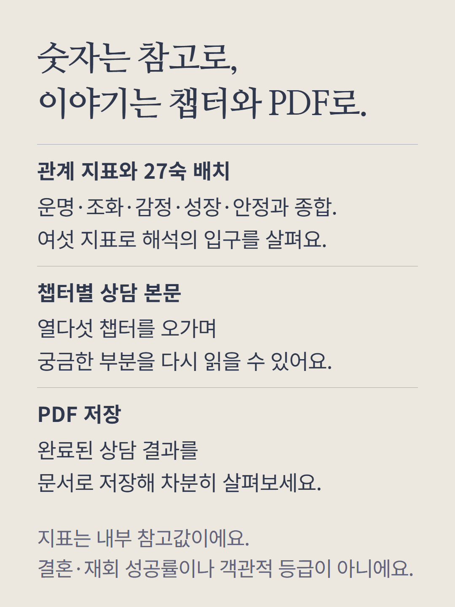
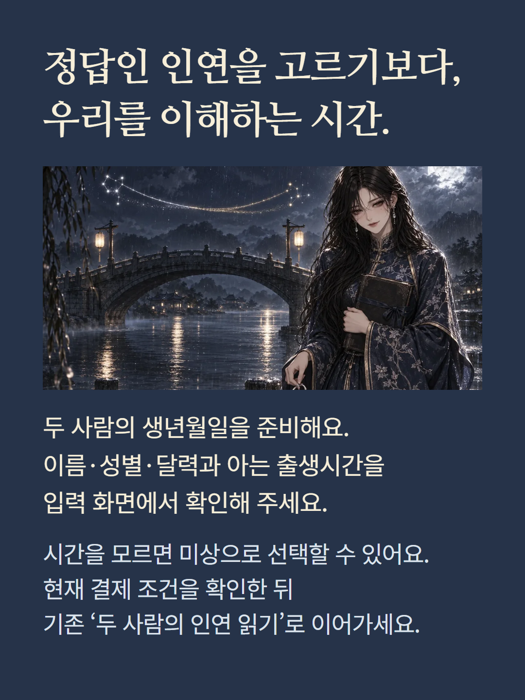

두 사람의 출생 정보와 숙요점 계산 자료를 바탕으로 AI가 작성하는 궁합 상담입니다. 본명숙과 27숙 관계·거리·각자의 자리를 근거로 총평, 두 별의 본질, 해석 근거, 끌림, 감정 방향, 대화법, 관계 단계, 갈등, 주의 패턴, 카르마, 성장, 빛나는 순간, 다섯 관계 영역, 시간에 따른 변화, 마지막 편지의 열다섯 챕터를 구성합니다. 여섯 지표는 서비스 내부 참고값이며 결혼·재회 확률이나 객관적 관계 등급이 아닙니다. 상대의 실제 속마음을 확인한 결과가 아니며, 카르마와 전생 서사는 상징적 해석입니다. 만남 직후·1년·3년·5년 이후의 설명은 선택과 관계 변화에 따른 시나리오이며 날짜별 사건을 보장하지 않습니다. 완료 결과는 챕터별로 읽고 PDF로 저장할 수 있습니다. 출생시간을 모르면 미상으로 선택하며 제공된 정보에 따라 해석 범위가 달라집니다. 기본 숙요 궁합, 정밀 확장, 인연 레이더, 질문 AI 상담은 별도 상품입니다. 예시는 이해를 돕기 위한 가상 편집이며 실제 응답이나 고객 후기가 아닙니다. 서한비는 상담을 안내하는 캐릭터이며 상담 본문은 AI가 작성합니다. 현재 결제 조건을 확인해 주세요.